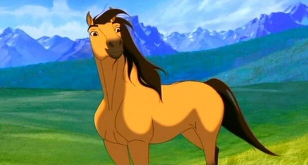
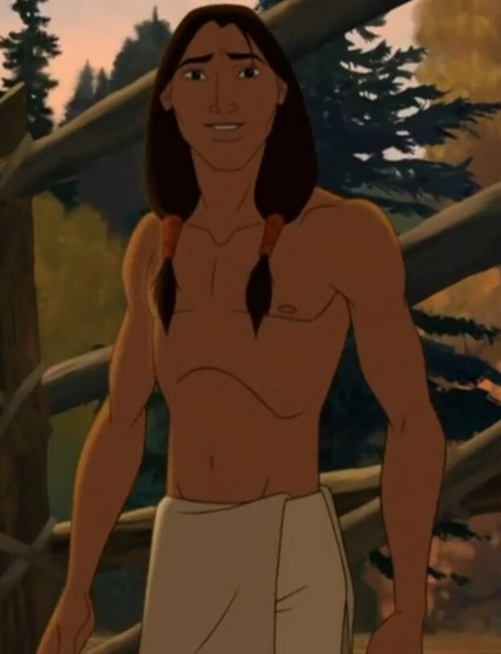
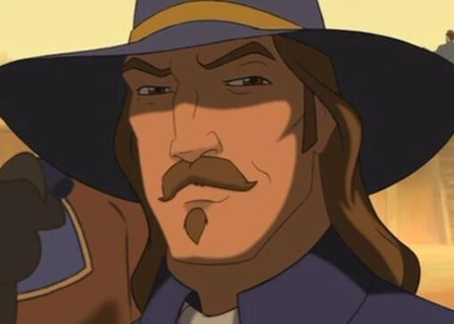
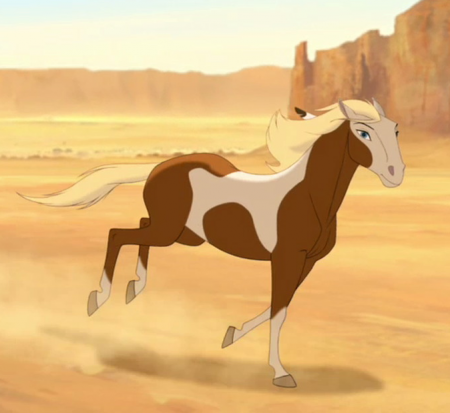

About
This animated adventure set in the Old West tells the tale of Spirit, a mustang born in the wild who is captured by cruel cavalry officers.
Movie Trailer and Behind the Scenes
My Favourite Things about Spirit
- I love the soundtracks
- I love the setting in the Old West
- The Animation!
- A Film with little dialogue but a good story and great emotion
Character Profiles

Spirit
A couragous mustang horse who gets captured by the colonel and his crew. He fights for his freedom with his friend Little Creek.

Little Creek
Little Creek becomes friends with Spirit after helping him escape from the colonel. In fact, he is the one who named Spirit.

The Colonel
He captures Spirit and Little Creek and attempts to recapture them after they escape.

Rain
Spirit meets Rain when he escapes with Little Creek. He later falls in love with her.